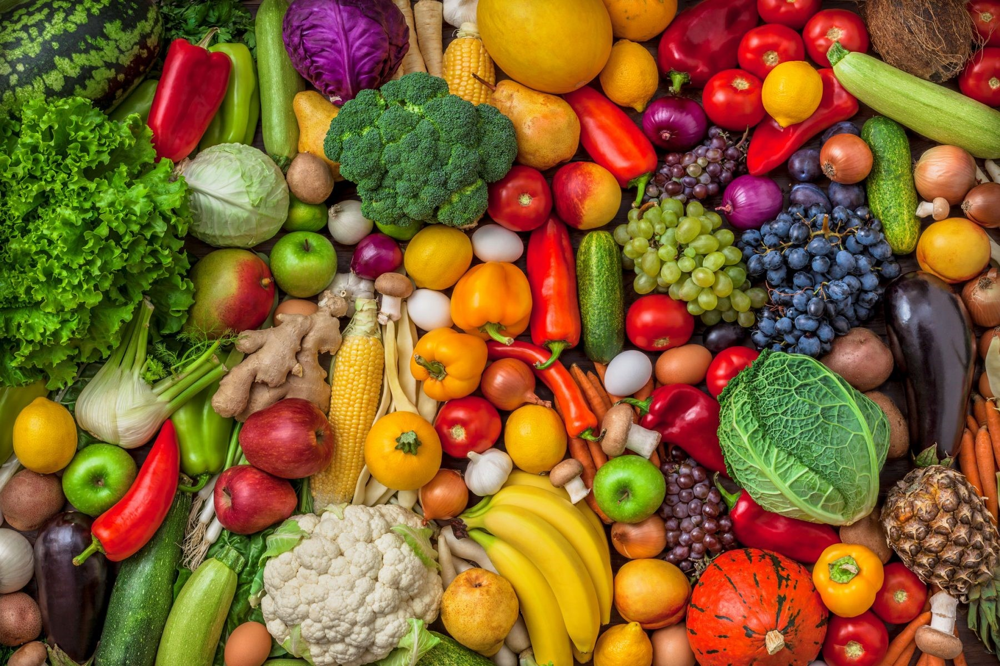
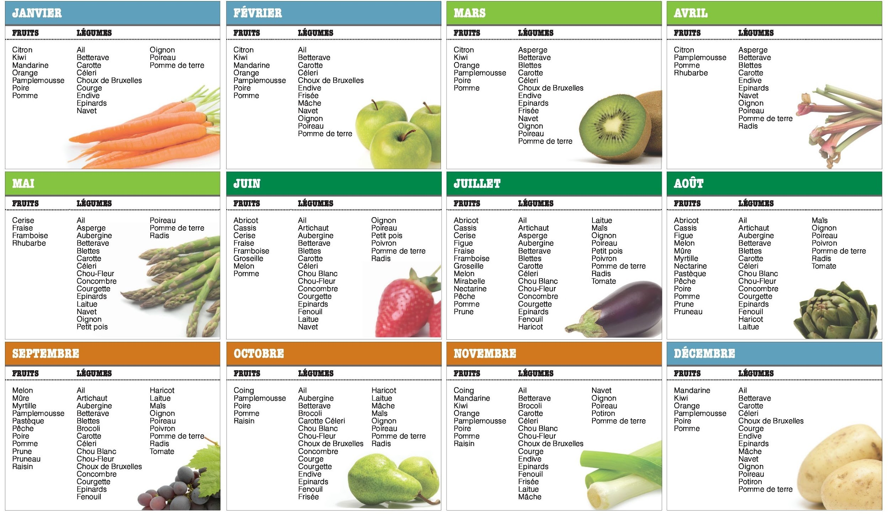

Pour bien commencer :
Pourquoi manger des fruits et légumes de saison et locaux est meilleur pour toi et pour la planète ?
Ils ont plus de goût : les fruits et légumes qui arrivent à maturité au soleil développent des saveurs que ceux mûrissant pendant le transport ne peuvent avoir. On a tous le souvenir de tomates en hiver ayant le goût de l’eau…Donc plus ils viennent d’un pays lointain, plus ils sont cueillis trop tôt et n’auront pas de goût, et bien sûr plus ils consommeront du carburant.
Ils répondent au bon moment à nos besoins nutritionnels : la nature est bien faite et nous offre tout ce dont nous avons besoin au bon moment ! En hiver, avec le froid et le manque de soleil, notre corps réclame plus de nutriments et notre système immunitaire a besoin d’un petit coup de fouet : tant mieux, c’est la saison des légumes riches en minéraux et des agrumes pleins de vitamine C. En été, avec la chaleur, notre organisme dépense moins de calories mais demande plus d’eau : tous les fruits et légumes de la saison en sont gorgés : melon, salade, tomate, courgette, fruits rouges, etc. !
Ils sont moins traités : hors saison, un fruit ou un légume viendra soit d’une récolte sous serre, où il a été aspergé de pesticides pour l’aider à pousser et pour compenser le manque de soleil et de nutriments dans le sol ; soit d’un pays lointain où les produits phytosanitaires ne sont pas forcément aussi réglementés qu’en Europe. Et ces pesticides sont de plus en plus montrés du doigt sur de nombreux cas de cancers, d’infertilité et autres maladies modernes, et se retrouvent également dans les nappes phréatiques et ont un impact sur toute l’écologie locale.
Ils sont moins chers : les produits de saison et locaux demandent bien sûr moins de transports et pas de taxe d’importation, ce qui se répercute sur le prix.
En résumé, moins de pesticides, moins de carburant utilisé…Que du bon pour l’environnement et pour toi !
D’ailleurs, peut-être faudrait-il apprendre à Obélix à manger des légumes pour accompagner ses sangliers ?
Allez, à ton tour d’apprendre les fruits et légumes de saison !!!!
Déroulement :
Regarde bien ce tableau, attention tu as 2 minutes pas plus!
Alors tu as bien retenu ? A toi de jouer ! Pour fruit associe a un mois
Réponse :
Les mois pour manger des abricots sont juin, juillet et aout.
Réponse :
Les mois pour manger des fraises sont mai, juin et juillet.
Réponse :
Les mois pour manger des aubergines sont mai, juin, juillet, aout et septembre.
Réponse :
Les mois pour manger des raisins sont septembre, octobren et novembre.
Réponse :
Les mois pour manger des pommes sont janvier, février, mars, avril, juin, juillet, aout, septembre, octobre, novembre et décembre.
Réponse :
Les mois pour manger des carottes sont tous.
Réponse :
Les mois pour manger des kiwis sont janvier, février, mars, novembre et décembre.
Réponse :
Les mois pour manger des pommes de terre sont tous.
Réponse :
Les mois pour manger des tomates sont juillet, aout et septemebre.
Réponse :
Les mois pour manger des poireaux sont tous.
Pour finir :
Tu peux retrouver ce tableau sur internet, alors n’hésite pas à l’imprimer ou le recopier, puis l’afficher sur ton frigo, dans la cuisine ou au dessus de ton lit !